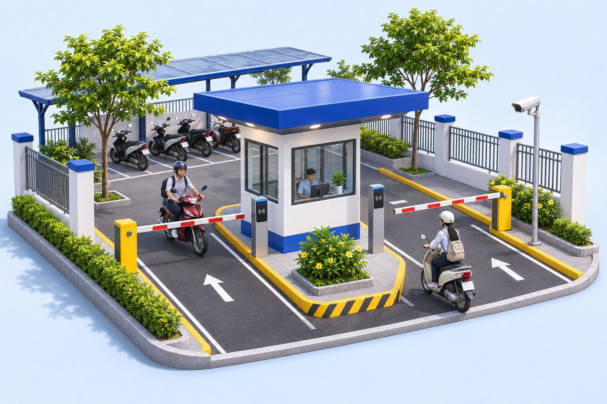
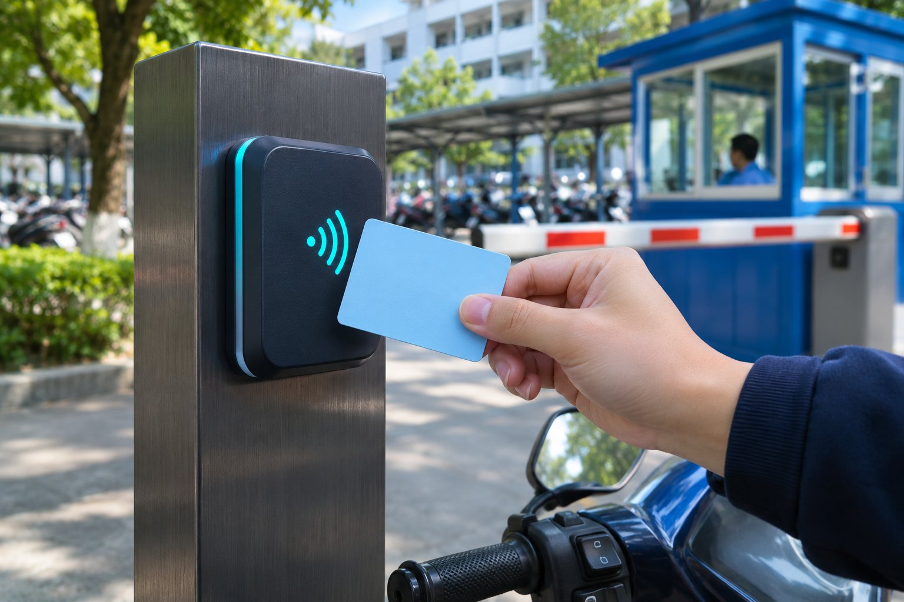

Camera và đối chiếu hình ảnh
Máy trực có thể hiển thị tối đa bốn nguồn camera. Mỗi làn hỗ trợ góc trước và sau để bảo vệ có thêm căn cứ kiểm tra xe và biển số.
Làn vàoGóc trước · Góc sau
Làn raGóc trước · Góc sau
Dự án Smart Parking
Theo dõi từng lượt gửi xe từ lúc quẹt thẻ đến khi rời bãi. Smart Parking đưa thông tin thẻ, ảnh tại cổng và phí gửi lên cùng màn hình để bảo vệ kiểm tra.

Quy trình gửi xe
Khi đọc thẻ, phần mềm kiểm tra xem thẻ đã có một lượt gửi đang mở hay chưa. Thông tin đó giúp máy trực nhận biết xe chuẩn bị vào hay đang làm thủ tục ra.

Đầu đọc chuyển mã thẻ về máy trực. Nếu là thẻ vé tháng có hồ sơ, phần mềm hiển thị thông tin người đăng ký và xe để bảo vệ kiểm tra.
Camera chụp phương tiện theo các góc đã cấu hình. Ảnh sẽ làm căn cứ đối chiếu khi xe ra.
Phần mềm ghi giờ vào, gắn ảnh với lượt gửi và đưa xe vào danh sách đang trong bãi.
Phần mềm dùng mã thẻ để lấy giờ vào, ảnh lúc vào và thông tin xe đã ghi nhận.
Bảo vệ xem ảnh lúc vào cùng ảnh tại làn ra. Phí hiển thị theo loại thẻ và quy định đã cấu hình.
Phần mềm ghi giờ ra, ảnh ra và phí đã thu nếu có, rồi chuyển lượt gửi từ danh sách xe trong bãi sang lịch sử.
Tính năng
Màn hình tại quầy hỗ trợ xử lý từng lượt. Các chức năng quản lý giúp đăng ký thẻ, kiểm tra xe trong bãi và tổng hợp dữ liệu sau ca trực.
Máy trực có thể hiển thị tối đa bốn nguồn camera. Mỗi làn hỗ trợ góc trước và sau để bảo vệ có thêm căn cứ kiểm tra xe và biển số.
Quản lý loại thẻ, trạng thái và hạn sử dụng. Hồ sơ vé tháng có thể lưu biển số, thông tin xe, ảnh chân dung và ảnh xe.
Đăng ký từng hồ sơ hoặc nhập danh sách Excel/CSV. Phần mềm kiểm tra thông tin bắt buộc và mã thẻ trùng trước khi lưu.
Phí tính theo loại thẻ. Có thể đặt lịch miễn phí theo từng loại vé dựa trên giờ xe vào. Khi một khoản phí được trừ từ số dư thành viên, hệ thống ghi giao dịch để đối chiếu.
Tìm theo biển số, mã thẻ hoặc thời gian. Có thể lọc theo loại vé hoặc tình trạng xe, rồi mở lượt gửi để xem ảnh và thông tin chi tiết.
Xem số lượt và doanh thu theo ngày, tháng hoặc năm. Màn hình quản lý có thể xuất kết quả tìm kiếm ra CSV để đối chiếu bằng bảng tính.
Mỗi trạm có cấu hình camera, đầu đọc, phím tắt và âm báo riêng. Màn hình quản lý dữ liệu và thao tác sửa cài đặt camera yêu cầu mã bảo vệ.
Hai hình thức đều dùng thẻ để tìm lượt gửi. Khi có hồ sơ đăng ký, bảo vệ có thêm thông tin để đối chiếu tại cổng.
Cấu trúc hệ thống
Một bãi xe có thể dùng nhiều máy trực. Mỗi máy nhận dữ liệu từ thiết bị tại cổng của mình và dùng chung hồ sơ, lịch sử cùng kho ảnh qua mạng nội bộ.
Chọn một bộ phận để xem dữ liệu đi qua đó.
Đầu đọc có thể nối qua cổng COM hoặc gửi mã giống như một bàn phím. Mỗi camera mạng truyền hình về ứng dụng bằng RTSP, giao thức dùng để truyền video. Khi có lượt xe, máy trực chụp ảnh từ các góc đã cấu hình.
Ứng dụng Windows tìm thông tin thẻ và hiển thị ảnh, giờ vào và phí nếu có. Cấu hình đầu đọc, địa chỉ camera, âm báo và phím tắt được lưu riêng để phù hợp với thiết bị của từng trạm.
PostgreSQL lưu hồ sơ, xe đang trong bãi và lịch sử đã hoàn tất. Tệp ảnh nằm trong thư mục dùng chung để các trạm có quyền truy cập có thể mở ảnh khi tra cứu. Khi khởi động, ứng dụng kiểm tra cơ sở dữ liệu và nơi lưu ảnh trước khi vào màn hình vận hành.
Dịch vụ bảo trì riêng hỗ trợ sao lưu dữ liệu và kho ảnh, chuẩn bị phần lưu trữ lịch sử theo tháng và xử lý ảnh cũ theo thời hạn đặt trước. Khi dọn ảnh giao dịch cũ, bản ghi lượt gửi vẫn được giữ lại.
Hỏi đáp
Tìm nhanh theo chủ đề bạn quan tâm, chẳng hạn vé tháng, camera hay sao lưu.
Đó là thẻ có mã nhận diện đọc được khi đưa đến gần đầu đọc. Smart Parking dùng mã này để tìm thông tin thẻ và lượt gửi tương ứng.
Ảnh lúc vào và ảnh lúc ra giúp bảo vệ đối chiếu. Người trực kiểm tra thông tin rồi xác nhận lượt xe trên phần mềm.
Phiên bản ứng dụng hiện tại ghi nhận quyết định mở thanh chắn trên giao diện. Khi lắp thanh chắn thật, bãi xe cần tích hợp bộ điều khiển phù hợp với thiết bị.
Cần máy Windows tại quầy, đầu đọc RFID, camera IP, mạng nội bộ, cơ sở dữ liệu PostgreSQL và nơi lưu ảnh. Số camera và vị trí lắp phụ thuộc vào cách bố trí làn xe.
Có thể xem lại biển số hoặc mã thẻ đã ghi nhận, giờ vào, giờ ra, phí nếu có, và ảnh còn trong thời hạn lưu trữ.
Phần mềm kiểm tra giờ xe vào so với lịch miễn phí của loại thẻ đó. Bãi xe có thể cài lịch cho từng loại vé theo khung giờ cần áp dụng.
Có thể nhập danh sách từ Excel hoặc CSV. Trước khi lưu, phần mềm kiểm tra những thông tin bắt buộc như họ tên, biển số và các mã thẻ bị trùng trong danh sách.
Bản ghi lượt gửi vẫn được giữ lại. Việc dọn dẹp theo thời hạn áp dụng cho ảnh lịch sử đủ điều kiện. Dịch vụ bảo trì cũng hỗ trợ sao lưu dữ liệu và kho ảnh.
Đây là trang giới thiệu dự án và giải thích cách hệ thống hoạt động. Bảo vệ vận hành bãi xe trong ứng dụng Windows tại quầy.
Không có mục khớp với từ khóa. Thử từ ngắn hơn, chẳng hạn “camera” hoặc “thẻ”.
Mã nguồn và liên hệ
Xem mã nguồn ứng dụng Windows, đọc tài liệu cài đặt hoặc gửi câu hỏi và góp ý qua mục Issues của dự án.